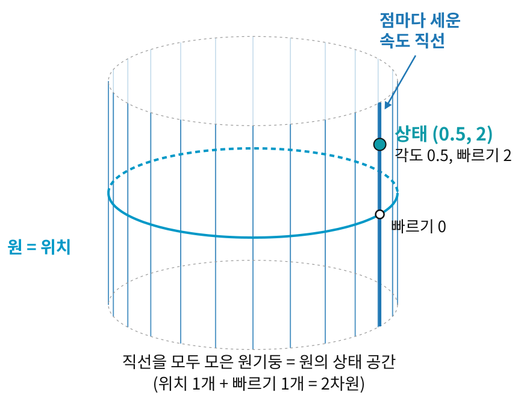

접선다발: 위치와 속도를 한 공간에
개미가 북극에서 적도로 내려가는 동안 속도가 사는 방은 매 순간 바뀐다. 개미의 상태, 곧 "어디에 있고 어느 쪽으로 얼마나 빨리 가는가"를 점 하나로 적고 싶다면 이 방들을 어떻게 모아야 할까? 평면이라면 위치 2개와 속도 2개를 이어 붙여
원에서 먼저 해 보자. 원 위의 상태는 숫자 두 개로 적힌다. 각도 다이얼 하나와, 그 자리에서 다이얼이 돌아가는 빠르기 하나. 예를 들어 (0.5, 2)는 "각도 0.5인 자리에서 빠르기 2로 돌고 있다"는 상태다. 각도는 원을 따라 한 바퀴 돌아 제자리로 오고, 빠르기는 음수부터 양수까지 어떤 실수든 될 수 있다. 원의 점마다 그 점의 속도 직선을 하나씩 세워 늘어놓으면, 원을 따라 세운 직선들이 원기둥을 이룬다. 원의 상태 공간은 원기둥이고, 원기둥은 2차원이다.

구면이라면 위치 2개와 속도 2개, 모두 4개의 숫자다. 일반적으로
- 접선다발 (방향의 방 모음 / Tangent Bundle,
) — 모든 점의 접선공간을 한데 모은 것. 도 곱셈이 아니라 이름이다. 접선공간 에서 특정한 점 를 떼어 내, "매니폴드 의 모든 점의 접선공간"을 뜻한다. 그 자체가 차원( 은 의 차원)의 매니폴드이고, 위치와 속도를 한꺼번에 나타내는 무대다.
이처럼 점마다 같은 모양의 방을 붙이되 전체가 하나의 매끄러운 공간이 되게 하는 구조에는 따로 역사가 있다.
역사: 샤를 에레스만 (Charles Ehresmann, 1905–1979)
"접선다발"이라는 말을 처음 들으면, 매니폴드의 각 점에 접선공간이라는 방을 하나씩 붙인다는 이미지가 떠오른다. 이 구조를 일반적인 틀로 다듬은 핵심 인물 가운데 한 사람이 샤를 에레스만이다. 특별한 경우는 그보다 먼저 나왔다. 1933년 헤르베르트 자이페르트(Herbert Seifert)가 3차원 공간을 원들의 묶음으로 보는 논문에서 「올(Faser)」이라는 말을 처음 썼고, 1935년 해슬러 휘트니(Hassler Whitney)가 「구면 공간」(1940년에 「구면다발」로 이름을 바꾼다)을 정의했다. 휘트니와 에두아르트 슈티펠(Eduard Stiefel)이 이 틀로 따진 물음은, 매니폴드의 모든 점에 서로 나란하지 않은 화살표 몇 개를 끊김 없이 붙일 수 있느냐였다.
에레스만은 스트라스부르 출신의 프랑스 수학자로, 1934년 엘리 카르탕(Élie Cartan) 밑에서 대칭이 많은 공간들의 위상을 다룬 박사 논문을 썼다. 1940년 독일군이 알자스를 점령하자 스트라스부르 대학은 통째로 프랑스 중부의 클레르몽페랑으로 옮겨 갔고, 에레스만도 대학을 따라갔다.
다발에 관한 그의 연구는 1941년 무렵부터 이 피란 대학에서 나오기 시작했다. 그는 파이버 다발(fibre bundle)의 일반 이론을 세우는 데 앞장섰다. 바탕이 되는 공간의 각 점에 같은 모양의 공간(파이버)을 하나씩 붙이되, 전체가 매끄러운 매니폴드를 이루는 구조다. 접선다발은 그 가장 자연스러운 예다. 바탕은 매니폴드
에레스만은 또한 1950년, 다발 위에서 이웃한 점의 벡터를 비교하는 규칙(에레스만 접속)을 도입하여, 곡선을 따라 벡터를 돌리지 않고 옮기는 일반적 방법을 제시했다.
ML에서: 모멘텀 옵티마이저의 상태
모멘텀을 쓰는 경사하강법은 매 단계 매개변수
문제 4 — 태풍 정보 한 줄
확인 태풍 정보에 「중심 위치 북위 30.0°, 동경 128.0°, 진행 방향 북북동, 진행 속도 시속 30 km」라고 나왔다. 태풍의 중심을 지구 표면 위를 움직이는 점으로 보자. (가) 이 한 줄에서 태풍 중심의 지금 상태(어디서, 어느 쪽으로, 얼마나 빨리)를 정하는 숫자는 몇 개인가? (나) 진행 방향과 속도를 동쪽으로 가는 빠르기와 북쪽으로 가는 빠르기로 바꿔 적어라. 북북동은 북쪽에서 동쪽으로 22.5° 돌린 방향이다.
같이 풀기 세션 4

숫자로 적힌 게 30.0, 128.0, 30이니까 셋이요. 북북동은 글자고요.

진행 방향을 북동으로 바꿔 적어도 같은 태풍이에요?

아니요, 가는 쪽이 달라지죠. 북북동도 22.5°라는 숫자 하나였네요. 넷이에요.

(나)는 동쪽이
맞아요. 곡면 위 한 점의 상태는 위치를 적는 숫자 둘과, 그 자리에서 잰 속도의 숫자 둘이에요.
문제 5 — 접선공간은 몇 차원인가
확인 반지름 1인 구면
같이 풀기 세션 5
3차원이요. numpy로 접선공간의 벡터를 뽑아 보면 성분이
성분이 세 개라고 3차원은 아니지. 접선공간의 벡터는 법선(곡면에 수직으로 선 방향)과 수직이라는 조건을 하나 만족해야 하잖아. 자유롭게 고를 수 있는 건 두 개야.
민준 학생, 이 점에서 접선공간의 벡터
구면에서는 법선이
맞아요. 성분의 개수는 우리가 구면을 어디에 넣어 두었느냐에 달려 있지만, 차원은 구면이 스스로 정해요.
보고서 표에 칸이 세 개 있어도 셋째 칸이 앞의 두 칸으로 계산되는 합계 칸이면, 조교님이 “실제로 입력한 값은 두 개네요” 하시는 거랑 같네요.
문제 6 — 길이 1로 묶인 매개변수의 모멘텀
계산 매개변수 두 개를 길이 1로 묶어 두면 매개변수는 원 위를 움직인다. 지금 매개변수는
같이 풀기 세션 6
원 위 한 점의 접선공간에 들어 있는지는 길이로 봐요? 무엇으로 봐요?
법선과 수직인지로 보죠. 원에서는 법선이
그러면 삐져나온 몫을 빼면 돼.
그래요. 매개변수를 구면에 묶어 두고 모멘텀을 쓰는 최적화 방법은 이렇게 옛 속도를 새 점의 접선공간으로 옮기는 단계를 따로 둬요. 그대로 쓰면 삐져나온 몫은 다음에 길이를 1로 맞출 때 잘려 나가 헛걸음이 되죠.
조별 과제 주제가 바뀌었는데 지난주 자료를 그대로 붙여 넣으면, 새 주제와 안 맞는 부분은 결국 잘려 나가는 거랑 같네요. 새 주제에 맞는 몫만 옮겨 와야 해요.